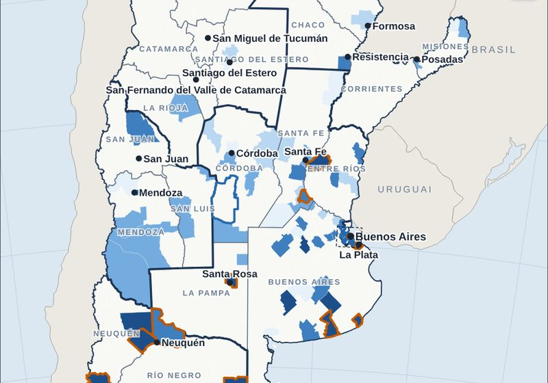
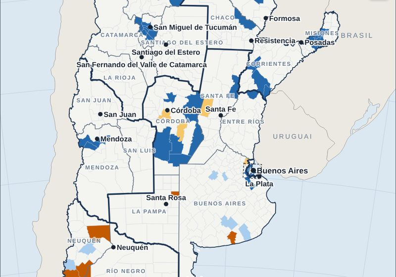
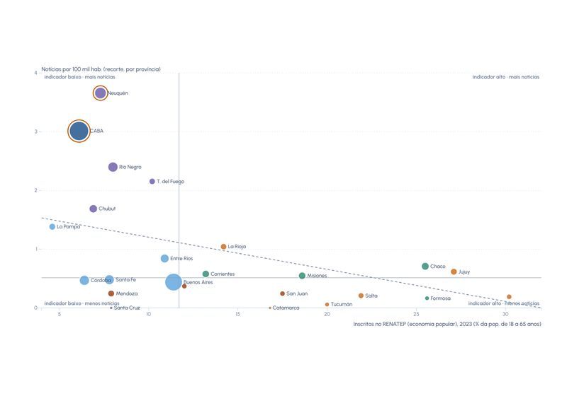
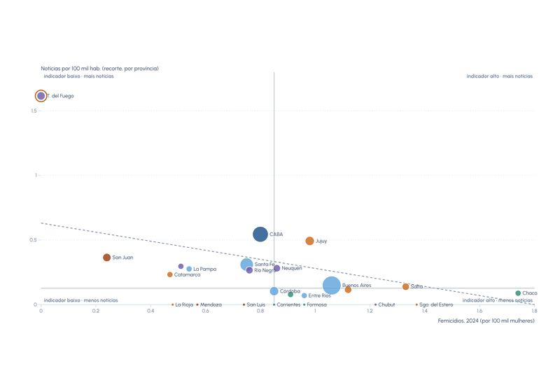
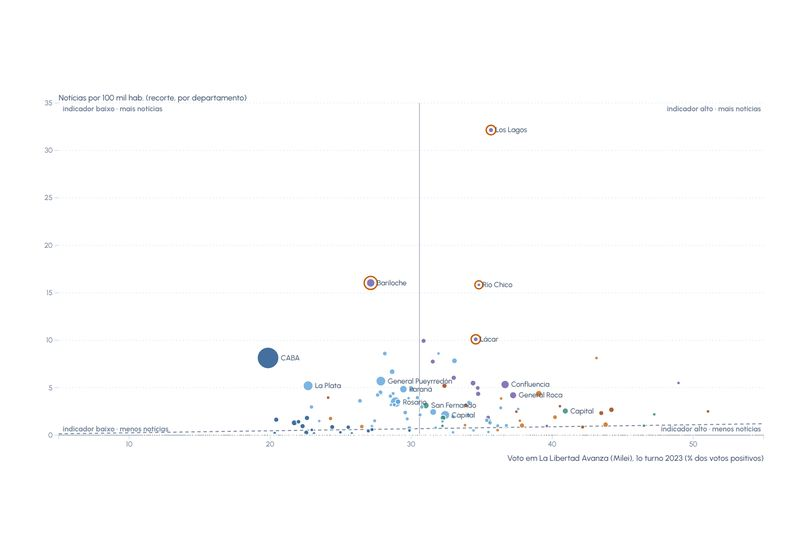
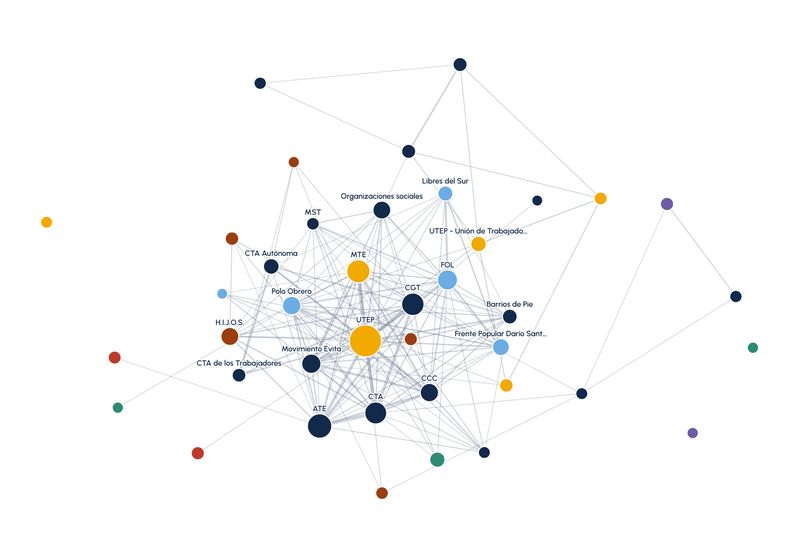
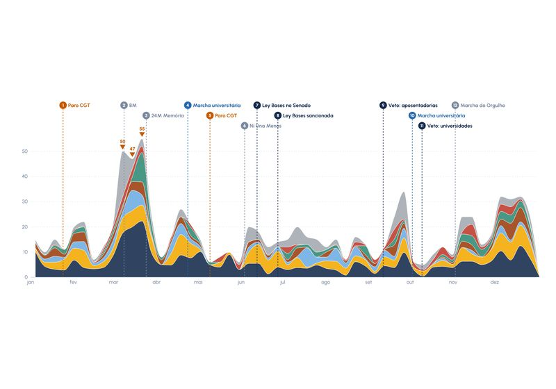
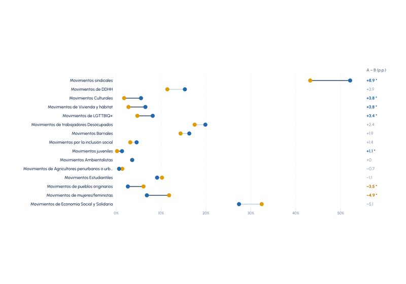

Perguntas para começar
Cada pergunta abre a base já com o mapa ou o gráfico que ajuda a respondê-la. Dali, dá para mudar os filtros e seguir explorando.

Onde há mais notícias de protesto por habitante?
Notícias por 100 mil habitantes em cada departamento, com os lugares muito acima ou muito abaixo do esperado pela população.

A mobilização forma manchas regionais?
Pontos quentes e frios: departamentos com muitas (ou poucas) notícias por habitante cercados de vizinhos parecidos.

A economia popular se mobiliza onde ela é maior?
Inscritos no ReNaTEP e notícias dos movimentos da economia popular e de desocupados, por província.

A mobilização feminista acompanha os femicídios?
Taxa de femicídios de 2024 e notícias de movimentos feministas por habitante, por província.

Houve mais protesto onde Milei teve mais votos?
Voto em La Libertad Avanza no 1º turno de 2023 e notícias por habitante, por departamento.

Quais organizações agem juntas?
A rede das 40 organizações mais citadas: quem aparece nas mesmas notícias e quem faz a ponte entre grupos.

Quando a mobilização cresceu em 2024?
Notícias semana a semana, por tipo de movimento, com os paros, marchas e votações do ano marcados.

O que distingue o Gran Buenos Aires do resto do país?
Os tipos de movimento lado a lado, com as diferenças estatisticamente significativas destacadas.
O que dá para fazer na base
- Síntese
Uma leitura em texto, com gráficos, mapa e tabelas, que reúne os principais resultados e se refaz para qualquer recorte (só os sindicais, só a Patagônia…).
- Distribuição e cruzamentos
Escolha qualquer variável, cruze com outra e veja não só as contagens, mas quais combinações aparecem mais ou menos que o esperado.
- Comparar recortes
Dois grupos lado a lado, como a Grande Buenos Aires e o resto do país, destacando as diferenças estatisticamente significativas.
- Fluxos
Diagramas de Sankey ligam quem se mobiliza ao tipo de ação e aos objetivos.
- Correspondências
Análise de correspondências múltiplas: o espaço dos repertórios de ação, movimentos, objetivos e regiões.
- Redes de movimentos
Quem age junto, os blocos de organizações e quem faz a ponte entre eles.
- Mapas
Taxas por habitante, mapas bivariados com o Censo 2022, pontos quentes, animação mês a mês e 38 camadas de contexto.
- Contexto
As notícias diante de privação material, serviços, educação, trabalho, densidade e violência, por província ou departamento.
- No tempo
Evolução semanal e mensal com os acontecimentos de 2024 marcados, e o calendário diário das ações.
- Imprensa
Quem noticia as ações e como a cobertura se concentra entre veículos e regiões.
- Fichas
O perfil de cada movimento, província ou localidade em uma página.
Contribua com a base
Encontrou um erro, conhece uma ação que não está aqui ou fez um trabalho com estes dados? Conte para a equipe. Toda sugestão é lida e revisada antes de entrar na base.
- Apontar um erro numa notíciaMovimento, objetivo, lugar ou data codificados errado, notícia repetida ou link quebrado. Dica: na base, cada notícia tem uma ficha com o botão “Sugerir uma correção”, que já preenche o código.
- Sugerir uma notícia que faltouUma ação coletiva de 2024 na Argentina que não aparece na base: diga o que aconteceu, quando, onde e quem se mobilizou, com o link da notícia.
- Incluir uma produçãoArtigo, apresentação, capítulo, tese ou material didático feito com a base, para entrar na página Produções.
- Escolha uma das opções acima: abre um formulário curto no GitHub (é preciso ter uma conta, gratuita).
- Preencha e envie. A sugestão fica registrada e pode ser acompanhada.
- A equipe confere a notícia e, se confirmar, corrige a planilha; a base se atualiza na publicação seguinte.
Dados abertos
- Base tratada em CSV, uma linha por notícia
- Notícias e indicadores do Censo 2022 por departamento (CSV)
- Camadas para QGIS (GeoPackage): localidades, departamentos, províncias, regiões e aglomerados
- Dicionário de variáveis
- Pipeline em Python para refazer todo o tratamento
Fontes oficiais de contexto
- INDEC, Censo Nacional de Población, Hogares y Viviendas 2022: resultados definitivos e 28 indicadores por departamento do Geoportal estadístico
- INDEC, Encuesta Permanente de Hogares: pobreza e indigência (segundo semestre de 2024) e mercado de trabalho (quarto trimestre de 2024)
- Ministerio de Seguridad Nacional, SNIC: homicídios dolosos por província, 2023 e 2024